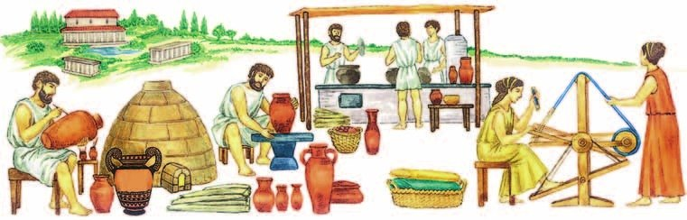
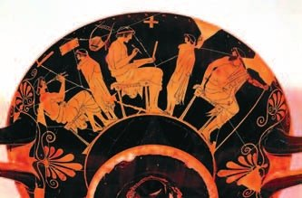
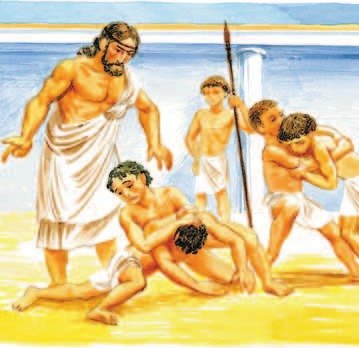

В доме
День грека был занят хозяйством, делами полиса и отдыхом с друзьями.
Греческий дом со всех сторон окружали стены с узкими окнами — с улицы ничего не видно. Дверь была одна, на замках и засовах.
Впереди — комнаты для гостей. В глубине, за ещё одной дверью с засовом, — .
Там жили все дети до семи лет — и мальчики, и девочки. Там почти всё время проводили жена и дочери хозяина: пряли, ткали, готовили еду. Подруги навещали друг друга только там. На улицу женщина выходила только с мужем или со служанкой.
А мужчина с утра уходил на свой участок. Часто ездил продавать товар в соседние области. После обеда к нему приходили друзья: устраивались на ложах, беседовали об умном, угощались. Их развлекали музыканты и танцовщицы. Ночью гости расходились, а слуга освещал им дорогу факелом.
У вас дома всё по-другому: работают и папа, и мама, и с тобой занимаются оба. А мама ещё и ездит на карьеры — она геолог. В Афинах женщина не могла даже одна выйти на улицу.
Повседневная жизнь грека с утра до вечера была занята хозяйственными делами, участием в политической жизни полиса и развлечениями дома в кругу друзей.
Дом, огороженный со всех сторон стенами с узкими окнами, скрывал жизнь семьи от посторонних глаз. Проникнуть в дом было сложно. Единственная дверь запиралась на замки и засовы. В передних комнатах принимали гостей. В задних комнатах располагалась женская половина дома. Её отделяла от остального дома дверь с засовом.
На женской половине находились дети до семи лет: и мальчики, и девочки. Здесь проводили почти всё время жена и дочери хозяина дома: коротали время за прядением и ткачеством, готовили пищу. Гречанки встречались и навещали друг друга только на женской половине дома. Женщина на улицах города появлялась всегда в сопровождении мужа или служанки.
Мужчина с утра отправлялся на свой участок. Нередко он совершал поездки, чтобы выгодно продать свой товар в соседних областях. Во второй половине дня хозяин встречал приглашённых друзей. Мужчины устраивались на ложах, вели философские беседы, ели и пили угощения. Музыканты и танцовщицы развлекали хозяина и гостей. С наступлением ночи пирующие расходились по домам в сопровождении слуги, который факелом освещал дорогу.
- Как распределялись обязанности в греческой семье?
1. Могла ли афинская женщина голосовать в Народном собрании (§29)? Найди подсказку в этом разделе.
2. Найди в доме две «границы», которые отделяли жизнь женщин от чужих глаз.
На агоре
Много времени мужчины проводили на (§23). Это и рынок, и место встреч. Там стояли общественные здания, заседал совет полиса.
На агоре всегда шумно. Продавцы громко зазывали покупателей и хвалили товар: еду, ремесленные изделия, дорогие вещи, рабов. Покупатели азартно торговались.
Еда стоила недорого: семья могла прожить день на два — это 1—2 грамма серебра. Положи на кухонные весы десятирублёвую монету — 5,63 грамма. Серебра на день семье нужно было в три-пять раз меньше.
На агоре узнавали новости и встречали друзей. А ещё заходили в суд — послушать, как там выступают.
Много времени мужчины проводили на агоре. Это место служило грекам и рынком, и местом встреч. На агоре находились общественные здания. Здесь проходили заседания совета полиса и важные совещания.
На агоре всегда было шумно, сюда приходили с разными целями. Продавцы криками зазывали покупателей, расхваливая свой товар: продукты питания, ремесленные изделия, предметы роскоши, рабов. Покупатели увлечённо торговались. Цены на основные продукты были невысокими. Семья могла в день прожить на два обола (1—2 грамма серебра).
На агоре узнавали городские новости, встречались с друзьями. Греки часто заглядывали на судебные заседания послушать речи, с которыми там выступали.
- Какое значение имела агора в жизни полиса?
3. Семья жила на два обола в день, а на агоре продавали и предметы роскоши, и рабов. Что это говорит о том, кто приходил на агору?
4. В §29 каждый афинянин много раз бывал судьёй. Почему же греки заглядывали в суд просто так — послушать?

Образование и воспитание детей
В школу мальчиков отдавали в семь лет. Школы были частные — за учёбу платили.
Посмотри на рисунок школы: фон чёрный, а фигуры цвета глины. Это краснофигурная роспись — ты знаешь её по §30.
Сначала учили читать, писать и считать. Писали заострённой палочкой на дощечке, покрытой воском. Ошибся — разгладил воск и пиши снова.
Главное в учёбе — поэмы Гомера «Илиада» и «Одиссея» (§22). Их читали и рассказывали наизусть, с выражением. На героях поэм учились, каким быть. Ты тоже учила наизусть — басню Крылова «Квартет». Только греческие мальчики учили целые песни Гомера.
Ещё учили играть на и кифаре и петь. Стихи без музыки не читали никогда. Помнишь, в «Квартете» звери так и не смогли сыграть? А греческих мальчиков музыке учили всерьёз.
По математике учили сложение, вычитание, умножение и деление, возводили числа в квадрат и в куб, решали примеры с дробями и задачи на площадь и объём.
С 12 лет мальчик ходил ещё и в — школу борьбы и гимнастики. Пять главных упражнений: бег, борьба, прыжки, метание диска и метание копья. Учили и кулачному бою — чтобы привыкнуть к боли, и танцам — как науке о движении тела. У тебя на физкультуре тоже есть прыжки!
Были и — бесплатные школы, их содержало государство. Там площадки для упражнений, бассейны и комнаты, где философы и поэты беседовали и учили красиво говорить.
Государство в Афинах следило и за частными школами: нельзя учить ничему против демократии. Учителей за это наказывали и даже судили.
В 18 лет юноша становился . Он клялся в верности полису и целый год учился у опытных наставников: бег и борьба, верховая езда (ты уже пробовала!), колесницы, мечи, копья, лук, морское дело, как ставить лагерь.
Через год эфебы показывали в театре, чему научились, и получали от государства щит и копьё. Потом ещё год охраняли границы. После двух лет юноша становился полноправным гражданином — в 20 лет.
А девочки в Афинах в школу не ходили совсем. Ты бы там не учила ни Гомера, ни дроби — пряла бы на женской половине. Только в Спарте учили и девочек (§27).
В Древней Греции обучение мальчиков в школе начиналось с семи лет. Школы были частными, и за обучение детей греки платили.
Первоначально мальчика в школе обучали чтению, письму и арифметике. Буквы чертили заострённой палочкой на дощечке, покрытой воском. В основе обучения лежало чтение и декламирование поэм Гомера «Илиада» и «Одиссея». Ученики не только знакомились с литературным языком, но и учились на примерах героев поэм.
В программу обучения входили игра на лире и кифаре, а также пение и декламация стихов под аккомпанемент этих музыкальных инструментов. Музыке в Древней Греции уделялось большое внимание, без музыкального сопровождения стихи никогда не читали.
Мальчики изучали сложение, вычитание, умножение и деление, возводили числа в квадрат и куб, производили действия с дробями. Их учили решать геометрические задачи с вычислением площадей и объёмов.
Для занятий гимнастическими упражнениями действовали гимнасии — специальные бесплатные школы. Здесь находились площадки для различных упражнений, бассейны, помещения, где философы и поэты проводили время за разговорами и учили желающих красиво говорить. Гимнасии содержало государство.
В Афинах государство контролировало и обучение в частных школах с целью не допустить чего-либо, направленного против афинской демократии. За нарушение этого правила учителей наказывали и даже предавали суду.
В 18 лет афинские юноши достигали совершеннолетия и получали возможность стать полноправными гражданами. Таких юношей называли эфебами. Они приносили присягу верности родному полису и под руководством опытных наставников в течение года занимались спортивными упражнениями (бегом, борьбой) и военной подготовкой (верховой ездой, ездой на колесницах, фехтованием на мечах, метанием копий, стрельбой из лука и т. п.). Кроме того, они изучали морское дело, обращение с метательными орудиями, мастерство разбивки лагеря.
Любопытные детали. Отрывок из клятвы эфебов: «Клянусь никогда не позорить это священное оружие, никогда не покидать своего места в битве. Один ли, со всеми ли вместе я буду сражаться за своих богов и за свой очаг. Я оставлю после себя своё отечество не уменьшенным, но более могущественным и более крепким. Я буду повиноваться приказаниям, которые продиктует мудрость должностных лиц; я буду подчиняться и тем законам, которые находятся в силе в настоящее время, и тем, которые будут постановлены народом».
После года занятий эфебы в театре показывали навыки владения оружием и строевые приёмы и получали от государства щит и копьё. Затем они отправлялись на охрану границ государства и несли службу в течение года. По окончании двухлетней эфебии (подготовки эфебов) юноши считались полноправными гражданами.
Девочки не посещали школу. Однако в Спарте существовала государственная система образования, где уделяли внимание и образованию девочек.

- Чему учили детей в полисах Древней Греции?
5. Зачем мальчики учили наизусть Гомера? Вспомни героев §22.
6. Сравни, как растили мальчиков в Афинах и в Спарте (§27). Что общего и что разное?
7. Клятва эфеба начинается с оружия и места в битве. Свяжи это с тем, что эфебы получали через год.
Подведём итоги
- Какое место в городе чаще всего посещали греки и почему?
- Какие цели, кроме преподавания основ наук, преследовало образование в греческом полисе?
- Кто такие эфебы?
- Используя дополнительные источники информации, подготовь сообщение «Один день из жизни гражданина полиса» — Афин или Спарты (на твой выбор). Представь работу перед классом.
Прочитай список понятий. Какое из них лишнее? Объясни почему. Палестра, гимнасий, школа, агора.
Сформулируй ответ на главный вопрос параграфа — чем различались роли мужчины и женщины в Древней Греции? Приведи два-три довода.
Проверь себя
Нажимай по очереди — от самого раннего возраста к самому старшему.
1. Где жили дети до семи лет?
2. Как гречанка выходила на улицу?
3. На сколько оболов в день могла прожить семья?
4. На чём писали в греческой школе?
5. Что такое палестра?
6. Кого называли эфебами?
Расскажи вслух
Греческий дом и семья
- Стены со всех сторон, узкие окна, одна дверь на засовах; впереди комнаты для гостей.
- Женская половина: жена и дочери прядут, ткут, готовят; дети до 7 лет; на улицу — с мужем или служанкой.
- Мужчина: утром участок или торговля, вечером друзья, беседы и угощение.
Агора
- Рынок и место встреч; общественные здания, совет полиса.
- Шум и торг: еда, изделия, роскошь, рабы; семья жила на два обола в день.
- Новости, друзья, речи в суде.
Как учили мальчиков
- С 7 лет частная школа: письмо на восковой дощечке, счёт, Гомер наизусть, лира и пение.
- С 12 лет палестра: бег, борьба, прыжки, диск, копьё; бесплатные гимнасии.
- В 18 лет эфебы: клятва, год военного дела, год охраны границ; в 20 — гражданин. Девочки в школу не ходили.
Главный вопрос: роли мужчины и женщины
- Мужчина — хозяйство, торговля, агора, дела полиса, гости.
- Женщина — дом и дети, прядение и ткачество, на улицу только с провожатым.
- Мальчиков растили гражданами и воинами, девочек в Афинах не учили.